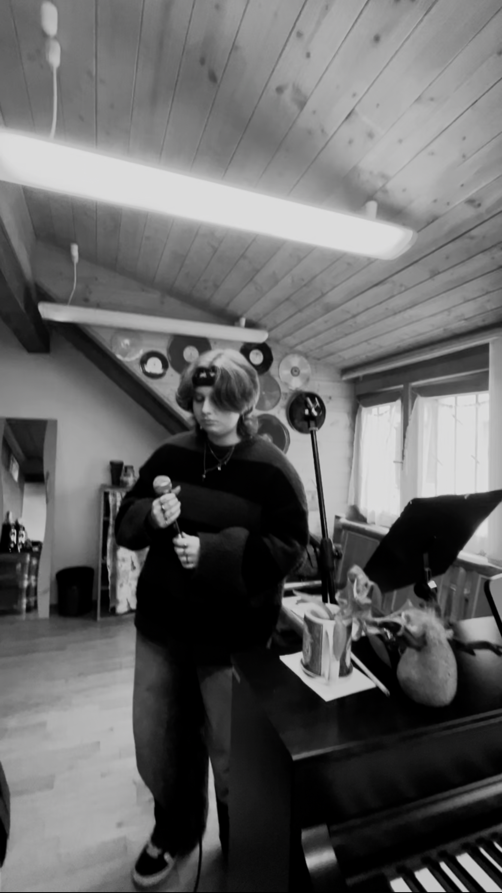

Galerie



Luca Ciancimino je populární zpěvák studující na Pražské konzervatoři. Zabývá se několika žánry, nejvíce rockem, popem a jazzem.
Koncertů moc nemá, protože nemá čas, musí cvičit. A když už nějaký má tak jednou za uherský rok, protože jeho profesorka je nepořáda.
11.11.2025, Divadlo na Rejdišti
8.12.2025, Koncertní sál PK
5.5.2026, Konzervatoř Jana Deyla
Email: elisa.ciancimino@seznam.cz
Instagram: @urf4vh3licopt3r